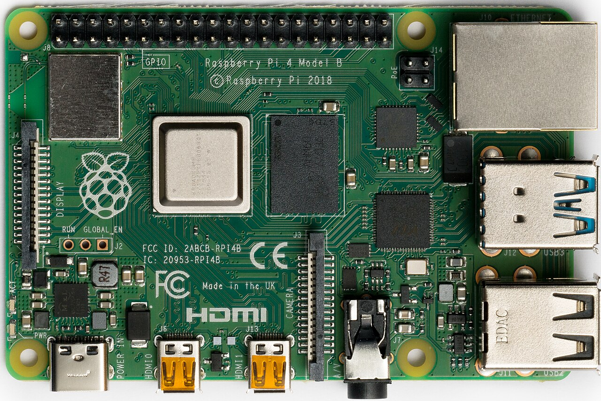
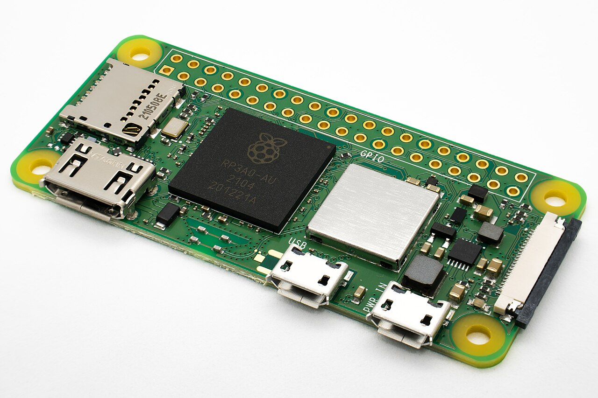
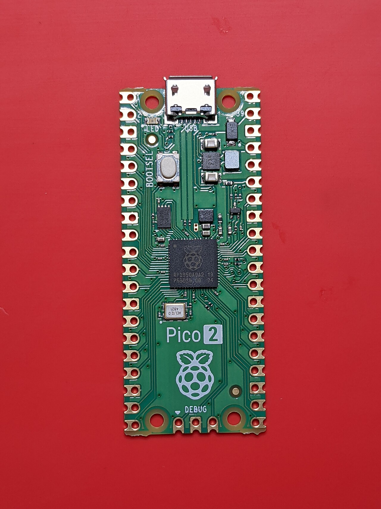
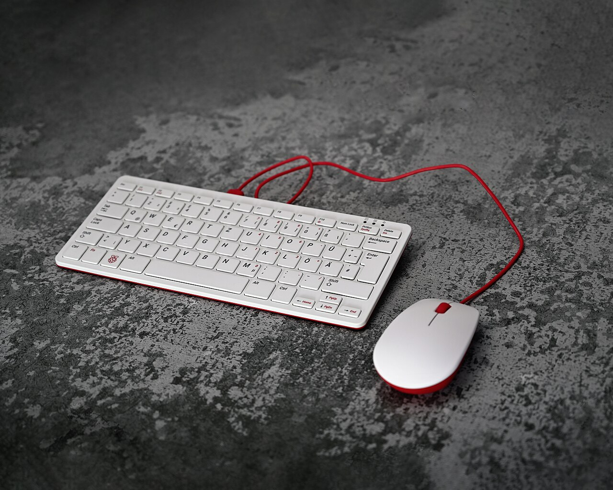

Raspberry Pi 5
2.4 GHz quad-core, up to 16 GB RAM, PCIe, dual 4K display. The desktop-replacement of the family.
8 GB — from
- CPUA76 ×4 @ 2.4 GHz
- RAM2 / 4 / 8 / 16 GB
- USB2× USB 3.0 + 2× USB 2.0
- Best forDesktop, AI, servers
There are three families: the full-size Pi (5 and 4 — real computers), the Zero family (tiny computers for embedded projects) and the Pico family (microcontrollers, no operating system). Plus keyboard computers, compute modules and the industrial side. Pick your currency — every price on this page converts instantly.
Prices below are in USD and converted live into your chosen currency. They are typical official-reseller prices and change with RAM, kits, shipping and local tax.
2.4 GHz quad-core, up to 16 GB RAM, PCIe, dual 4K display. The desktop-replacement of the family.

Slower than Pi 5 but rock-solid, widely supported by older tutorials and cheaper second-hand.

Roughly the size of a stick of gum with Wi-Fi and a quad-core CPU. Perfect for hidden/embedded builds.

Not a Linux computer — a microcontroller for sensing, motors and timing, programmed in MicroPython or C.
| Your goal | Buy this | Why | From |
|---|---|---|---|
| Learn Linux & coding, first board ever | Pi 4 · 4 GB | Cheaper than Pi 5, every tutorial on earth supports it | |
| Use it as my main desktop PC | Pi 5 · 8 GB | 2–3× the CPU, smooth 4K, comfortable multitasking | |
| Home server, Docker, many containers | Pi 5 · 16 GB + NVMe | RAM is the limit for containers; SSD kills SD-card lag | |
| Hidden camera, weather station, IoT sensor | Zero 2 W | Tiny, low power, Wi-Fi built in | |
| Robot, motor, sensor, LED project | Pico 2 or Pico 2 W | Real-time control, instant boot, no OS to corrupt | |
| Media centre for the TV | Pi 4 · 2 GB | Kodi/LibreELEC needs little RAM, hardware video decode | |
| All-in-one for a kid or classroom | Pi 400 / Pi 500 | Computer inside the keyboard — nothing to lose | |
| Build a product to sell | Compute Module 5 | Board-only form factor, designed for carriers & enclosures |
Released late 2023 and refined since (16 GB model, D0 stepping), the Pi 5 is roughly 2–3× faster than the Pi 4 and finally fast enough to be somebody's only computer.
| 2 GB — light desktop, media, single role | |
| 4 GB — the sweet spot for most people | |
| 8 GB — recommended: desktop + containers | |
| 16 GB — heavy Docker, LLMs, build servers |
A Pi 5 without the official 27 W supply may limit USB current and cap performance. Add $12 for the PSU and $5 for the Active Cooler.
Beginner trap: the Pi 5 uses micro HDMI, not full-size HDMI. Buy a micro-HDMI-to-HDMI cable ($9) or a Pi 4/5 display cable in the same order, otherwise your monitor will not connect.
Still in production and still the most compatible Pi ever made. Slower and hotter than the Pi 5, but cheaper, better documented, and every kit, case and HAT on the market fits it.
Media centre, Pi-hole, single-service servers.
Kodi, small web server, retro gaming console.
Desktop use, coding, Docker, Home Assistant, Minecraft.
Parallel workloads, VMs, memory-hungry services.
| Feature | Pi 5 | Pi 4 Model B |
|---|---|---|
| CPU | 4× Cortex-A76 @ 2.4 GHz | 4× Cortex-A72 @ 1.5 GHz |
| Relative performance | 2–3× faster | baseline |
| 4K video | Dual 4K 60 Hz ✓ | Dual 4K 30 Hz / 1080p 60 Hz |
| PCIe / NVMe storage | ✓ native | USB adapter only |
| Power button | ✓ | ✗ |
| Idle power | ~2.5–3.5 W | ~2.5 W |
| Best price | (2 GB) | (1 GB) |
65 mm × 30 mm. The Zero 2 W has a quad-core CPU and Wi-Fi, which makes it a real (if slow) computer that hides inside anything.
≈ 5× faster than the original Zero. Add $3 for the "H" version with a pre-soldered header.
Still perfect for Pi-hole or a single sensor, but avoid it for desktop tasks.
You will need a mini-HDMI adapter for setup unless you configure it with Raspberry Pi Imager's pre-set Wi-Fi + SSH options (recommended).
The Pico has no operating system. You write a program, drop the file onto it, and it runs that program instantly, forever, with microsecond precision. That is exactly what motors, sensors and timing need.
RP2350, dual-core 150 MHz, 520 kB RAM, 26 GPIO.
Same plus Wi-Fi 4 & Bluetooth 5.2 — for IoT and remote control.
RP2040 original, still fully supported and dirt cheap.
Pre-soldered pins so it plugs into a breadboard immediately.
Pico vs Pi in one line: if your project must react in milliseconds, run for months on a battery, or never crash — use a Pico. If it needs a screen, a browser, a database or a camera — use a Pi.
Start with MicroPython. Plug the Pico into a PC via USB while holding BOOTSEL, drag the MicroPython .uf2 file across, open Thonny, and you are blinking an LED in five minutes — no soldering, no tools.
Ideal for kids, schools and anyone who wants zero cables and zero confusion. Plug the keyboard into a TV, add power, and you are in a desktop.


Scroll horizontally on a phone. Prices are the cheapest variant of each model.
| Model | Family | CPU | RAM | Wireless | Best use | From |
|---|---|---|---|---|---|---|
| Pi 5 | Full-size | A76 @ 2.4 GHz ×4 | 2–16 GB | Wi-Fi 5 | Desktop, server, AI | |
| Pi 4 Model B | Full-size | A72 @ 1.5 GHz ×4 | 1–8 GB | Wi-Fi 5 | Everything, cheaply | |
| Pi 3 Model B+ | Full-size (legacy) | A53 @ 1.4 GHz ×4 | 1 GB | Wi-Fi 4 | Old tutorials, retro | |
| Pi Zero 2 W | Zero | A53 @ 1 GHz ×4 | 512 MB | Wi-Fi 4 | Embedded, cameras | |
| Pi Zero W | Zero (legacy) | ARM11 @ 1 GHz | 512 MB | Wi-Fi 4 | Single small job | |
| Pi 400 | Keyboard | A72 @ 1.8 GHz ×4 | 4 GB | Wi-Fi 5 | Kids, classrooms | |
| Pi 500 | Keyboard | A76 @ 2.4 GHz ×4 | 8 GB | Wi-Fi 5 | All-in-one desktop | |
| Compute Module 5 | Industrial | A76 @ 2.4 GHz ×4 | 2–16 GB | optional | Mass-produced products | |
| Compute Module 4 | Industrial | A72 @ 1.5 GHz ×4 | 1–8 GB | optional | Existing products | |
| Pico 2 | Pico | RP2350 dual 150 MHz | 520 kB | — | Robots, sensors | |
| Pico 2 W | Pico | RP2350 dual 150 MHz | 520 kB | Wi-Fi 4 | Wireless gadgets | |
| Pico / Pico W | Pico (legacy) | RP2040 dual 133 MHz | 264 kB | W only | Cheapest control board |
12 MP autofocus, HDR, wide or standard lens. Doorbells, time-lapse, OCR, plant monitoring.
Sony IMX500 sensor with on-sensor AI: detects people, objects and poses without loading the CPU.
13 or 26 TOPS neural accelerator over PCIe. Runs local vision models and small LLMs on the Pi 5.
Temperature, humidity, pressure, gyroscope, magnetometer and an 8×8 LED matrix — the classic science HAT.
Official 15.6" 1080p IPS display, powered from the Pi itself, with built-in speakers and VESA mount.
Adds an NVMe SSD to the Pi 5 through PCIe. The single biggest speed upgrade you can make.
5V/5A USB-C. Required for full USB current and stable performance on Pi 5.
Official heatsink + fan. Drops sustained temperatures by 20–30 °C — buy it with the Pi 5.


The board arrives alone. A working computer needs these five things — forget one and nothing boots.
Class A1/A2 from a reputable brand — $10. Or an NVMe SSD with an M.2 HAT+ on the Pi 5 (much faster, $60+).
Official PSU: $12 (27 W for the Pi 5), $8 for older models. Cheap phone chargers cause random reboots and undervoltage warnings.
Active Cooler $5 or a metal case with a fan. Without it the Pi 5 throttles under load.
$10 official, $15–$30 for aluminium with passive cooling.
micro-HDMI cable $9, plus any USB keyboard and mouse you already own.
Buying advice: buy from the official reseller list for your country, or a large distributor. Fake microSD cards and "Pi 5-compatible" power supplies without PD support are the two most common ways people waste money. Use the build calculator to price a complete setup.